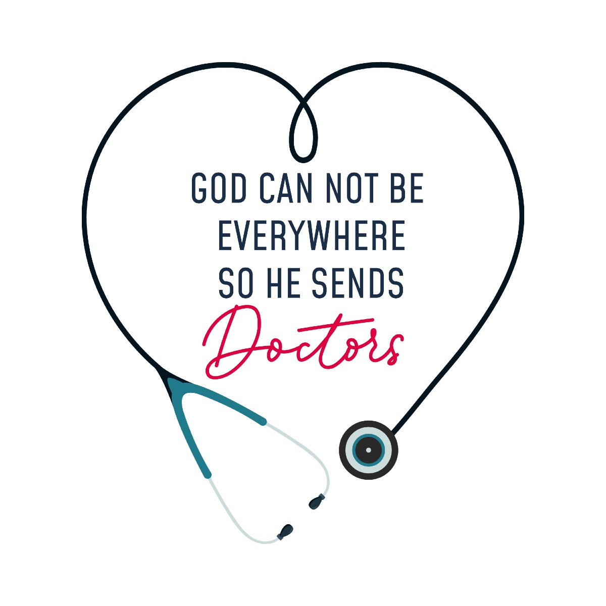

"Thank You Doctors"


Needless to say, doctors, nurses and people working in health-care sectors are particularly vulnerable to the highly infectious disease.
In response to the global pandemic, the under-resourced doctors are facing unprecedented challenges. The list of the sleep-deprived heroes includes doctors, nurses, medical cleaners, pathologists, paramedics, ambulance drivers, and health-care administrators.
In the fight against coronavirus, the brave medical army stands strong with thermometers, stethoscopes, and ventilators as their weapons. Not to forget, medical researchers are working day in and night out against all odds, hoping to find the antidote to the disease.
Since the coronavirus outbreak, health-care professionals have not only experienced the gratification of healing patients and saving their lives but have also lost many battles along the way.
On top of that, many doctors have even sacrificed their own lives in the line of duty.
Every day, the selfless warriors are giving it their all in health-care settings while cutting themselves off from their families and loved ones. The sacrifice that they are making for the safety and welfare of humanity is priceless and deserves lifelong gratitude on our end.
Most importantly, we must reassess the value health-care workers hold in our lives and the kind of treatment they get from us. Among the several lessons this coronavirus pandemic has been teaching us, the biggest one is to find ways to sufficiently invest in the better and more efficient medical fraternity and give medical professionals the respect, compensation and infrastructure that they truly deserve once this crisis is over. Moreover, the world needs to work towards advancement in medical research and technology. Nothing will be a greater tribute to the health-care workers than this.
That being said, we'd now like to highlight the heroic efforts of some courageous and inspiring doctors from across the globe who lost their lives while saving the lives of COVID-19 patients.
While the deadly virus has brought attention to the inadequacies in the health-care systems across the globe, doctors and health-care workers have been risking their lives to save all of us. They are also risking the lives of their family members, which indeed is a huge sacrifice. On top of that, the shortage of face masks, shields, and protective gear is not helping. And this makes the efforts of the medical workers even more extraordinary.
The sacrifice of doctors and healthcare workers across the globe will not go to waste. Humanity will always be grateful to them for what they are doing during these unprecedented times. The respect for healthcare professionals has grown manifolds in the hearts of people. It is good to see that the Government of India along with the governments worldwide have decided to allocate more budget for healthcare in their respective countries
In response to the global pandemic, the under-resourced doctors are facing unprecedented challenges. The list of the sleep-deprived heroes includes doctors, nurses, medical cleaners, pathologists, paramedics, ambulance drivers, and health-care administrators.
In the fight against coronavirus, the brave medical army stands strong with thermometers, stethoscopes, and ventilators as their weapons. Not to forget, medical researchers are working day in and night out against all odds, hoping to find the antidote to the disease.
Since the coronavirus outbreak, health-care professionals have not only experienced the gratification of healing patients and saving their lives but have also lost many battles along the way.
On top of that, many doctors have even sacrificed their own lives in the line of duty.
Every day, the selfless warriors are giving it their all in health-care settings while cutting themselves off from their families and loved ones. The sacrifice that they are making for the safety and welfare of humanity is priceless and deserves lifelong gratitude on our end.
Most importantly, we must reassess the value health-care workers hold in our lives and the kind of treatment they get from us. Among the several lessons this coronavirus pandemic has been teaching us, the biggest one is to find ways to sufficiently invest in the better and more efficient medical fraternity and give medical professionals the respect, compensation and infrastructure that they truly deserve once this crisis is over. Moreover, the world needs to work towards advancement in medical research and technology. Nothing will be a greater tribute to the health-care workers than this.
That being said, we'd now like to highlight the heroic efforts of some courageous and inspiring doctors from across the globe who lost their lives while saving the lives of COVID-19 patients.
While the deadly virus has brought attention to the inadequacies in the health-care systems across the globe, doctors and health-care workers have been risking their lives to save all of us. They are also risking the lives of their family members, which indeed is a huge sacrifice. On top of that, the shortage of face masks, shields, and protective gear is not helping. And this makes the efforts of the medical workers even more extraordinary.
The sacrifice of doctors and healthcare workers across the globe will not go to waste. Humanity will always be grateful to them for what they are doing during these unprecedented times. The respect for healthcare professionals has grown manifolds in the hearts of people. It is good to see that the Government of India along with the governments worldwide have decided to allocate more budget for healthcare in their respective countries
Send a Message to Our Frontline Healthcare Workers